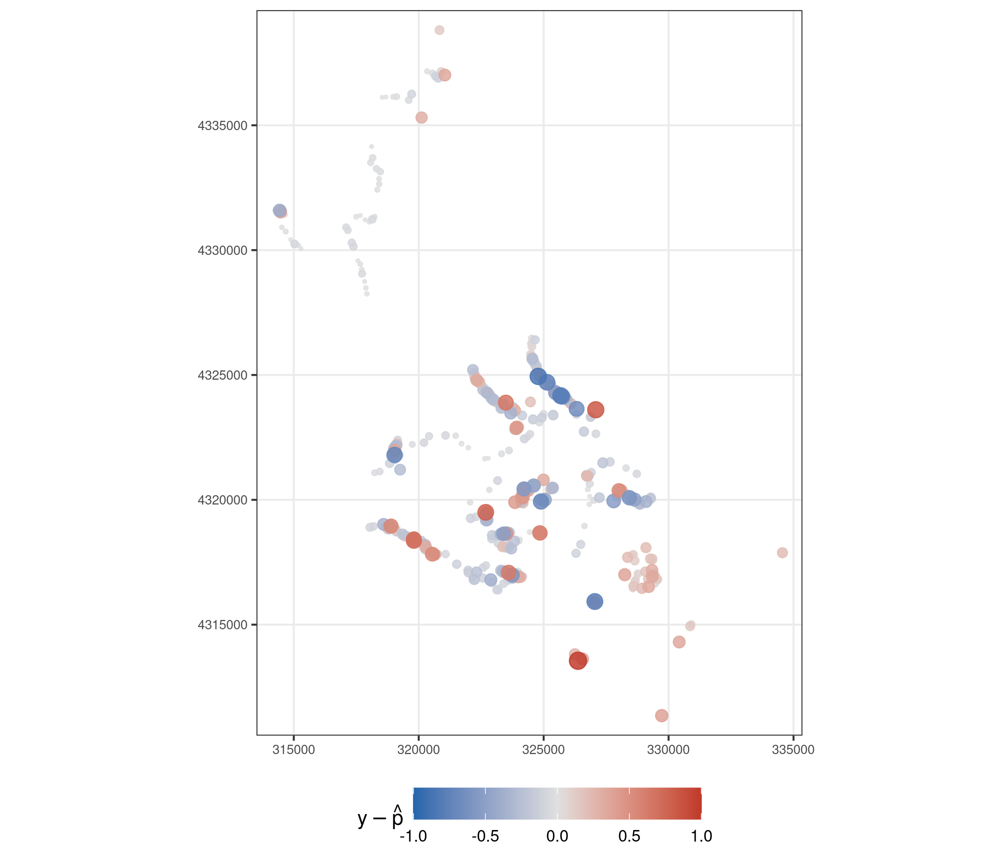
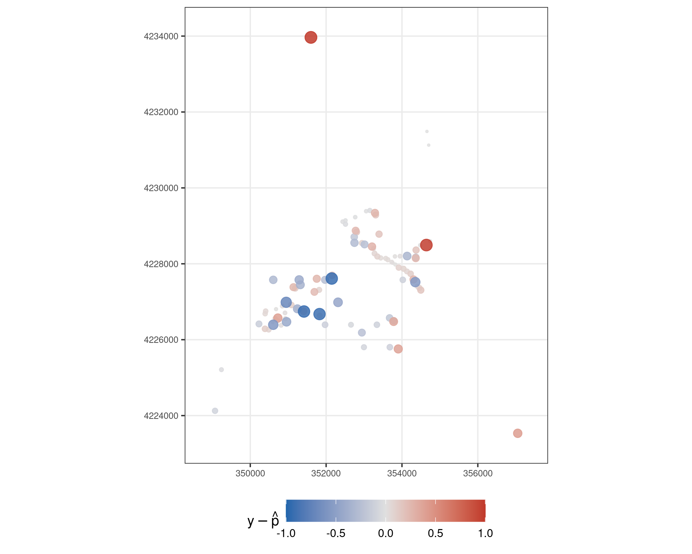
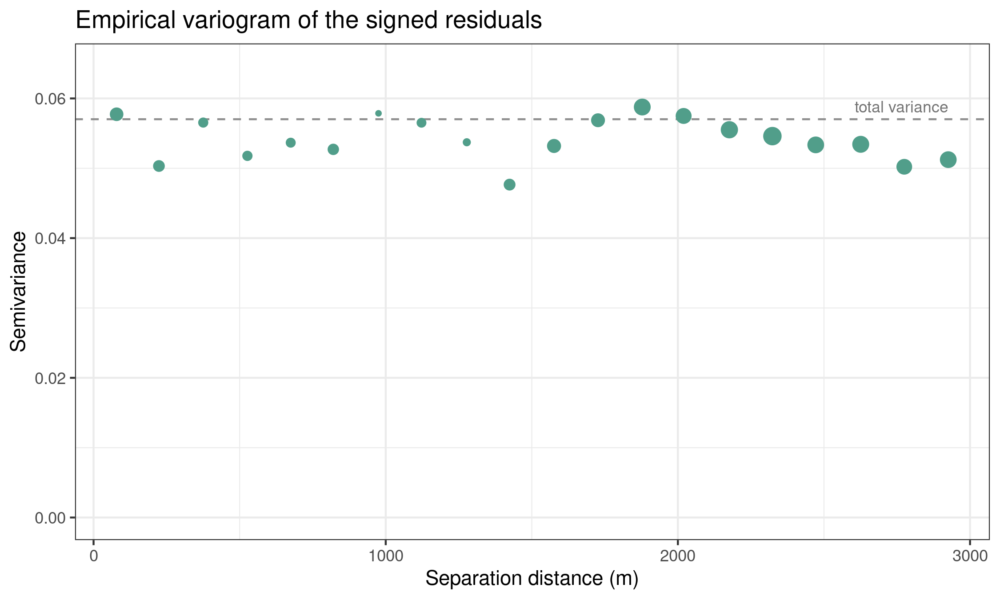

Appendix 8 — Spatial Structure in Model Residuals
Situation. The decision curves of the main text are pooled over the landscape: net benefit is a sum of true- and false-positive counts, so it is invariant to where a model’s errors fall. Two models with the same confusion matrix at every threshold have identical decision curves even if one scatters its errors at random and the other concentrates them in one drainage. A decision curve therefore cannot, by construction, reveal spatially structured mis-prediction. Here we give a simple diagnostic for it, and apply it to the example model.
Experiment. The model predicts the probability of suitable habitat, not occupancy. We scored its prediction surface against the reviewed field points — the genuinely labelled presences and absences, not the pseudo-absence candidates that are model inputs — and took, at each point, the signed difference between the observed occurrence and the predicted suitability (\(y - \hat p\)). A positive difference is a site the model under-rates (occupied, low predicted suitability); a negative one is a site it over-rates. We first map these signed differences to see their magnitude and sign directly, then ask whether they are spatially structured by fitting an empirical variogram. If residuals are autocorrelated, the structured part can be interpolated — residual (regression) kriging — into a bias-correction surface and used to re-rank or flag management units; if they are not, there is nothing to interpolate and the exercise stops there.


Result. The errors are small and, at the surveyed scale, spatially unstructured. The typical absolute difference is 0.13 in probability units (mean 0.17), and only 34 of 679 points miss by more than 0.5; over- and under-predictions roughly cancel, consistent with the near-calibrated pooled curve of the main text. The signed-difference maps show large residuals of both signs sitting side by side rather than forming coherent patches. The variogram makes this quantitative: its semivariance equals the total sample variance (0.057) from the shortest lag (0.058 at 79 m) onward and never climbs — a pure-nugget field. There is therefore no structured residual component to interpolate: residual kriging here would return the global mean everywhere and correct nothing.
We recommend the diagnostic regardless, because the finding is model- and data-specific. Where a model’s residuals are autocorrelated, the signed-difference map and variogram will show it, and residual (regression) kriging can turn that structure into a bias-correction surface or a per-unit flag — a way to recover spatial mis-prediction that a decision curve cannot see. We simply did not find such structure in this dataset, which is unsurprising: the full occurrence set for this taxon is difficult to predict, and the residuals here behave as spatial noise.
Two caveats bound the result. The predictions are read from the surface the model was trained on, so these are in-sample residuals and understate the true error; the proper comparison uses the held-out test partition from the train/test split, to be substituted when that file is recovered (see note below). And the field sample is confined to two small survey clusters, so this speaks only to within-cluster scales below about 2 km, not to broad-scale bias or to unsurveyed country — the same coverage limit that defines the area of applicability (Appendix 2).